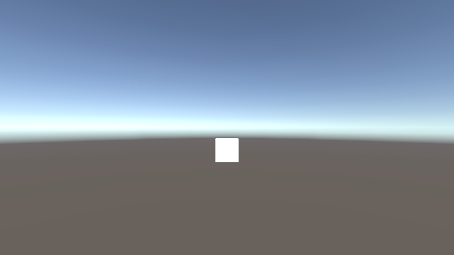

Drive Unity with an AI agent.
UnityPilot lets Claude Code (or any MCP host) manage the entire Unity lifecycle — install the editor, create a project, launch it, build scenes, write & compile C#, import assets, screenshot the view, read the console, and run tests — all without you opening the Unity Editor by hand.
npm install
npx -y unitypilot
You talk to the agent. The agent drives Unity.
UnityPilot is two pieces shipped as one package: a Node/TypeScript orchestrator (the MCP server) and a forked C# bridge it injects into your project. The agent calls tools over MCP; the orchestrator drives a real Unity Editor over a WebSocket.
The orchestrator is the moat; the bridge is a fork of CoderGamester/mcp-unity, made headless-capable and bundled in the package.
A state machine the agent walks for you.
Each tool is legal only in the right state, and the answer always tells the agent the next move. Resolved paths are frozen once into .unity-mcp/state.json so nothing drifts.
Ensure editor
ensure_editor detects or installs a Unity editor for your CPU via the Hub CLI.
Create project
create_project scaffolds the project and injects the bridge into its manifest.
Launch
launch boots the editor — visible by default so you watch it live; headless for CI.
Build & iterate
Scenes, objects, scripts, assets, screenshots, console, tests — the whole inner loop.
The agent fixes its own mistakes.
Write a script with a compile error and UnityPilot hands the agent the exact compiler message — file and line — instead of a silent stall. The agent reads the console, edits the script, and recompiles clean. No human in the loop.
- ✓script_write survives the domain reload, then reports
compile_failedwith the errors. - ✓read_console surfaces the same error — the other half of the loop.
- ✓Fix and re-run →
recompiled: true, component attached.

The agent can see the scene.
This is a real frame returned by the screenshot
tool during testing — Unity's skybox with a cube the agent created. The image comes back
inline (so the agent inspects it) and is saved to disk (so you can open it). Render
Camera.main, a named camera, or the Scene view.
Eighteen tools, one coherent surface.
Lifecycle tools advance the state machine; bridge tools act on the launched editor.
Lifecycle
Scenes & GameObjects
Authoring & feedback
Add it to your MCP host in one block.
For Claude Code, drop this into your .mcp.json, reconnect, and call status.
macOS
Apple Silicon or Intel.
Node ≥ 22
The orchestrator runtime.
Unity Hub
Installed; editors come via its CLI.
Unity license
A free Personal license works.
NotImplemented resolver stubs for contributors to fill in.